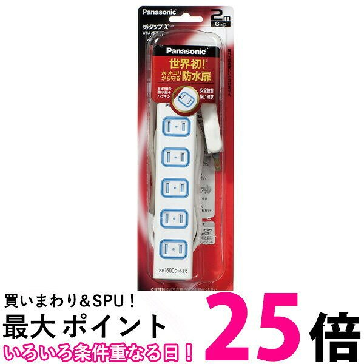
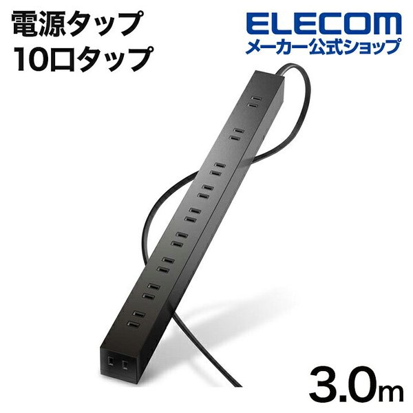
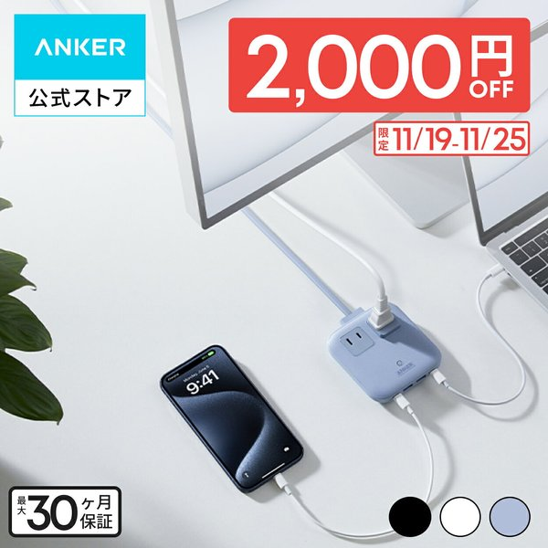
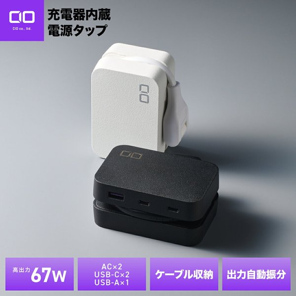
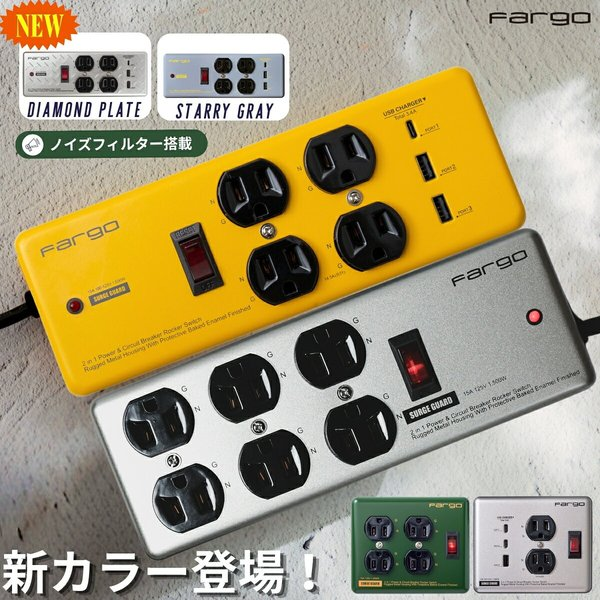
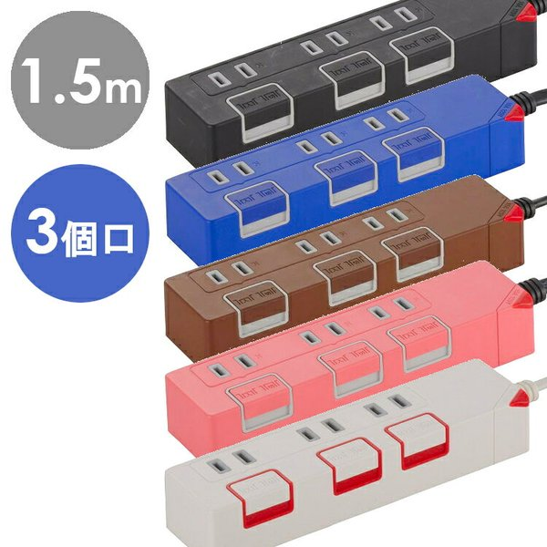
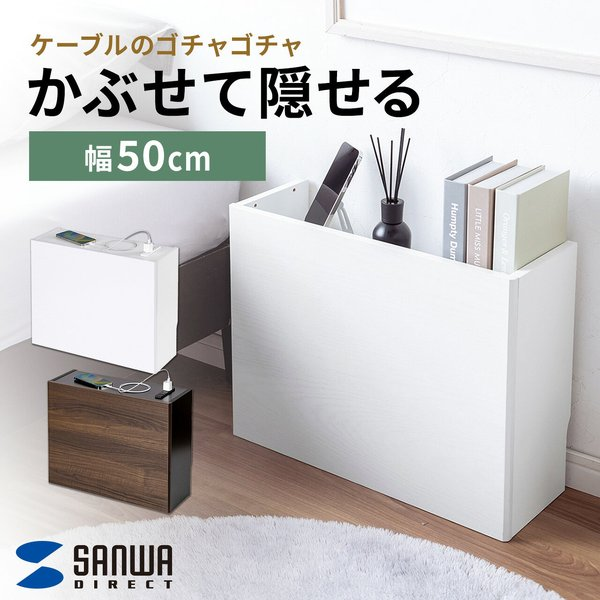
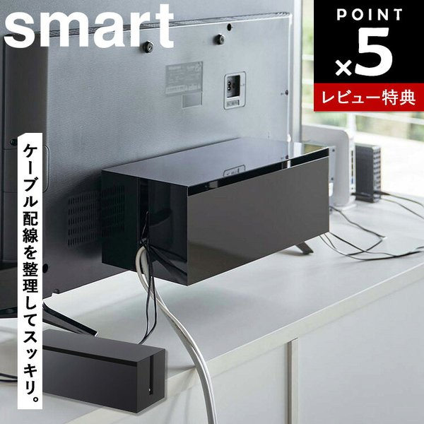
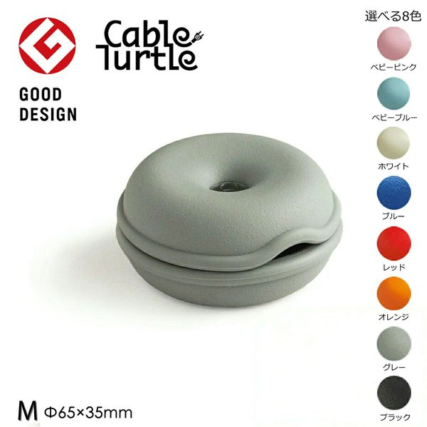
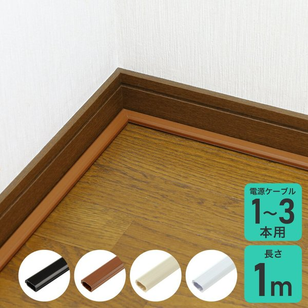

【2026年ブラックフライデー】テレビ裏・デスクの配線ごちゃつきを一掃！電源タップ・ケーブルボックス・結束バンド＆コンセント収納おすすめ10選
部屋が散らかって見える原因は、モノの量より配線だったりします。テレビの裏にタップが転がり、コードが床を横切り、デスクの下でケーブルが絡まっている。この見た目は、家具を買い替えても直りません。
片づけの順番は3つです。まず口数をまとめる。タップを1本に集約すると、コンセント周りから延長コードが消えます。雷ガード付きを選ぶと、家電を守る意味でも無駄がありません。次に隠す。ケーブルボックスや配線モールを使えば、機械とコードを見えなくできます。テレビ裏ならスリムなボックス、床を横切るならモールが向いています。最後にまとめる。ケーブルリールや結束用のリールで、余ったコードを短くします。この3つを順番にやると、同じ部屋でも見え方が変わります。ブラックフライデーは、この手の地味な道具が安くなる時期です。
本記事では、楽天市場で人気・高評価の電源タップと配線整理グッズ10選を、実売価格とレビュー評価つきで写真付き紹介します。
- おすすめ10選 スペック・特徴比較表
- BEST 1｜ザ・タップX 6コ口 2m WHA2526WP
- BEST 2｜雷ガード 電源タップ 10個口
- BEST 3｜Nano Charging Station（6-in-1, 67W）
- BEST 4｜Polaris CUBE Built in Cable（67W・ケーブル収納）
- BEST 5｜スチールタップ（メタル・USB付き）
- BEST 6｜節電タップ 3個口 1.5m（個別スイッチ）
- BEST 7｜ルーター収納 ケーブルボックス コンセント付き 幅50cm
- BEST 8｜テレビ裏ケーブルボックス スマート
- BEST 9｜ケーブルタートル（コードリール）
- BEST 10｜壁用 切れるモール 1m（テープ付き）
- 【読者負担0円】買わなくても得する無料サービス
- まとめ：電源タップと配線整理グッズ10選の選び方
| 順位 | 商品名 | ブランド | 最大の特徴・おすすめ理由 | 総合評価 |
|---|---|---|---|---|
| BEST 1 | ザ・タップX 6コ口 2m WHA2526WP | パナソニック（Panasonic） | 6口・2mでテレビ裏にちょうどいい | 4.67 |
| BEST 2 | 雷ガード 電源タップ 10個口 | エレコム（ELECOM） | 10個口でまとめて挿せる | 4.32 |
| BEST 3 | Nano Charging Station（6-in-1, 67W） | Anker | 67WのUSB-CでノートPCも充電できる | 4.68 |
| BEST 4 | Polaris CUBE Built in Cable（67W・ケーブル収納） | CIO | ケーブルを本体に収納できる | 4.38 |
| BEST 5 | スチールタップ（メタル・USB付き） | ファーゴ（Fargo） | 金属ボディでインテリアになじむ | 4.71 |
| BEST 6 | 節電タップ 3個口 1.5m（個別スイッチ） | オーム電機（OHM） | 口ごとにスイッチを切れる | 4.19 |
| BEST 7 | ルーター収納 ケーブルボックス コンセント付き 幅50cm | サンワサプライ | ルーターとタップを1箱にまとめられる | 4.66 |
| BEST 8 | テレビ裏ケーブルボックス スマート | 山崎実業（tower） | テレビ裏のすき間に置けるスリム設計 | 4.50 |
| BEST 9 | ケーブルタートル（コードリール） | Cable Turtle | 回すだけでケーブルを巻き取れる | 4.67 |
| BEST 10 | 壁用 切れるモール 1m（テープ付き） | エルパ（ELPA） | 切って必要な長さにできる | 5.00 |
ザ・タップX 6コ口 2m WHA2526WP

6個口の定番タップです。差し込み口にはホコリを防ぐ安全設計扉が付いていて、使っていない口から埃が入りません。コードは2mで、テレビボードの裏から壁のコンセントまで届く長さ。パッキン付きのコンセント仕様で、ほこりが溜まりやすい床置きでも安心して使えます。1,693円と、6口・2mのタップとしては価格がこなれているのも魅力です。まず「1本いいタップを持つ」なら、迷わずこれでいいと思います。楽天市場での実売価格は約1,693円（2026年11月時点）。
- 6口・2mでテレビ裏にちょうどいい
- ホコリ防止の安全設計扉付き
- 1,693円で定番価格
- 一括スイッチは付いていないので、個別に切りたい人は別モデルが向く
雷ガード 電源タップ 10個口

10個口の雷ガード付きタップです。雷サージを吸収する素子が入っていて、落雷で家電が壊れるリスクを下げられます。差し込み口にはほこりシャッター付き。本体には固定と吊り下げの両方に使える回転パーツが付き、デスクの脚やラックに固定できます。口数が多いタップは「挿す場所が決まらない」まま床に転がりがちですが、固定できるパーツがあると配線の通り道が決まります。楽天市場での実売価格は約2,740円（2026年11月時点）。
- 10個口でまとめて挿せる
- 雷サージから家電を守る
- 固定・吊り下げ両用の回転パーツ付き
- 37件とレビューはまだ少なめで、本体は10口ぶんの長さがある
Nano Charging Station（6-in-1, 67W）

AC差込口とUSBポートを1台にまとめた卓上タップです。ノートPCも充電できる67WのUSB-C給電に対応していて、デスクの上にこれ1台置けば、充電器をいくつも並べなくて済みます。AC差込口があるので、照明やモニターの電源もここから取れます。角が丸い小さな筐体で、机の端に置いても邪魔になりません。配線を「減らす」のではなく「1か所に集める」と、デスクの上が一気にすっきりします。楽天市場での実売価格は約4,990円（2026年11月時点）。
- 67WのUSB-CでノートPCも充電できる
- ACとUSBを1台に集約できる
- 小さくてデスクの端に置ける
- AC差込口は2口なので、家電をたくさん挿す用途には向かない
Polaris CUBE Built in Cable（67W・ケーブル収納）

充電器と電源タップが一体になった小型モデルです。AC2口とUSB-C2口を備え、ケーブルを本体に巻いて収納できます。持ち運ぶときにコードが絡まないのが最大の利点で、出張やカフェ仕事のバッグに入れておくと、コンセントが1口しかない席でも複数機器を充電できます。67W対応で、出力は挿した機器に応じて自動で振り分け。壁に直挿しできる形状なので、ホテルの狭いデスクでも場所を取りません。楽天市場での実売価格は約4,480円（2026年11月時点）。
- ケーブルを本体に収納できる
- 67WでノートPCとスマホを同時に
- 壁挿しできる形状で場所を取らない
- 58件とレビューは少なめで、AC2口・USB-C2口と口数は絞られている
スチールタップ（メタル・USB付き）

スチール製の筐体を使った、見せる前提の電源タップです。樹脂製の白いタップを床に置くのではなく、金属の質感でインテリアに合わせられます。AC4口に加えてUSB-AとUSB-Cのポートを備え、スマホの充電器を別に用意しなくても済みます。520件のレビューで評価4.71と、デザイン家電の中では検証済みの部類。テレビボードの上や、来客の目に入る場所に置くタップは、機能より見た目で選んだほうが後悔が少ないです。楽天市場での実売価格は約4,412円（2026年11月時点）。
- 金属ボディでインテリアになじむ
- AC4口＋USBで充電器を減らせる
- 520件・評価4.71の実績
- 金属製で樹脂製より重く、4,412円と価格は高め
節電タップ 3個口 1.5m（個別スイッチ）

3個口それぞれに押しボタンスイッチが付いた節電タップです。使わない家電の口だけ切れるので、待機電力の気になるテレビ周りや、冬だけ使う暖房器具の電源をこまめに落とせます。プラグはL型で、壁のコンセントに挿したときにコードが下に垂れません。1,280円。口数が少ないぶん、テレビ裏やベッドサイドの「3つだけ挿したい」場所に向いています。楽天市場での実売価格は約1,280円（2026年11月時点）。
- 口ごとにスイッチを切れる
- L型プラグでコードが垂れない
- 1,280円で試しやすい
- 3個口なので、口数を増やす用途には足りない（レビュー90件・評価4.19）
ルーター収納 ケーブルボックス コンセント付き 幅50cm

ルーターと電源タップをまとめて入れられる大型のケーブルボックスです。幅50cmで、Wi-FiルーターとONU、その電源タップが1箱に収まります。本体にコンセントが付いているので、ボックスの中でタップを別に用意する必要がありません。フタを閉めれば、配線も機械も見えなくなります。リビングにルーターを置いていて「配線が丸見え」と感じているなら、これ1台で解決するタイプの商品です。楽天市場での実売価格は約4,980円（2026年11月時点）。
- ルーターとタップを1箱にまとめられる
- コンセント内蔵で配線が増えない
- フタで機械ごと隠せる
- 幅50cmと大きいので、置き場所の寸法を先に測っておきたい
テレビ裏ケーブルボックス スマート

テレビの裏側に設置する前提で作られた配線隠しです。壁とテレビの間のわずかなすき間に置けるスリムな形で、電源タップと配線をまとめて隠せます。テレビを壁掛けにしている家庭でも、コードが床まで垂れずに済みます。山崎実業の「スマート」シリーズは白と黒の2色展開で、テレビの色に合わせやすいのも利点。設置は工具を使わず、テレビスタンドまわりに置くだけです。楽天市場での実売価格は約4,790円（2026年11月時点）。
- テレビ裏のすき間に置けるスリム設計
- 配線が床まで垂れない
- 白・黒でテレビに合わせやすい
- 24件とレビューは少なく、テレビの脚の形状によっては入らないことがある
ケーブルタートル（コードリール）

ケーブルを巻き取って収める、カメの甲羅のような形のリールです。径約65mmで、充電ケーブルやイヤホンのコードを1〜2mぶんすっきり収められます。使うときは端を引くだけ、収納するときは本体を回すだけ。8色展開なので、ケーブルごとに色を分けて「どのケーブルが何用か」を一目で見分けられます。770円と手頃で、引き出しの中やバッグの中でコードが絡む問題はこれでほぼ解決します。楽天市場での実売価格は約770円（2026年11月時点）。
- 回すだけでケーブルを巻き取れる
- 8色でケーブルを見分けられる
- 770円でいくつか買える
- 太い電源コードは入らないので、対象は充電・イヤホン系の細いケーブル
壁用 切れるモール 1m（テープ付き）

壁に沿わせる配線カバーを、必要な長さに切って使えるモールです。裏面にテープが付いているので、両面テープを別に買う必要がありません。収納できるケーブルは1〜3本程度で、LANケーブルやスピーカーの配線を壁伝いに這わせるのに向いています。4色展開で、壁紙に近い色を選べば目立ちません。306円と、試しに1本買ってみるのに抵抗のない価格です。楽天市場での実売価格は約306円（2026年11月時点）。
- 切って必要な長さにできる
- テープ付きですぐ貼れる
- 306円で色違いも試せる
- 7件とレビューは少なく、太い電源コードは1本でも入りにくい
この記事の商品を買う前に、まずは無料で得する選択肢をチェック。どれも登録・利用は0円で、無料期間中に解約すれば料金はかかりません。読みたい雑誌がある人、ポイントを貯めたい人、アンケートなら気軽という人、それぞれに合うものを選べます。
初回31日無料・無料期間中に解約すれば0円 → 楽天ポイントモール｜登録無料で毎日ポイ活
買い物なしでもポイントが貯まる無料サービス → 楽天インサイト｜アンケートに答えてポイント
登録無料・すきま時間のアンケートで貯まる → 楽天カード｜年会費永年無料
新規発行・年会費ずっと0円 →
4つのサービスの違いと使い分けは「出費0円で得する！買わずにポイントが貯まる無料サービス厳選4選」でまとめています。
💡 まとめ：電源タップと配線整理グッズ10選の選び方
配線の片づけは、順番を守ると短時間で終わります。まずタップ。テレビ裏なら6口・2mの定番、デスクならUSB付きの卓上タイプ、家電が多いなら雷ガード付きの10口を選んでください。口数を1本にまとめるだけで、床を這うコードが減ります。次に隠す。テレビの裏はスリムなケーブルボックス、ルーターまわりはコンセント付きの大きなボックス、壁伝いの配線はモールで覆います。最後に余ったケーブルをリールで短くしてください。ここまでやると、掃除機をかけるときにコードをどける手間もなくなります。ブラックフライデーで安くなっているうちに、まとめて揃えてしまうのがおすすめです。
楽天市場では「5と0のつく日」や「お買い物マラソン」などのキャンペーンに合わせて購入すると、ポイント還元が最大化してお得に手に入ります。ぜひチェックしてみてくださいね。